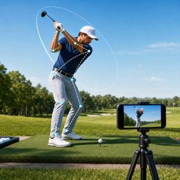
Golf Form Caddie
어드레스를 잡으면 알아서 녹화합니다. 스마트폰 2대를 정면과 측면에 두면 같은 스윙을 두 각도로 동시에 담고, 한 기기에서 나란히 비교할 수 있습니다.
App Store 출시 준비 중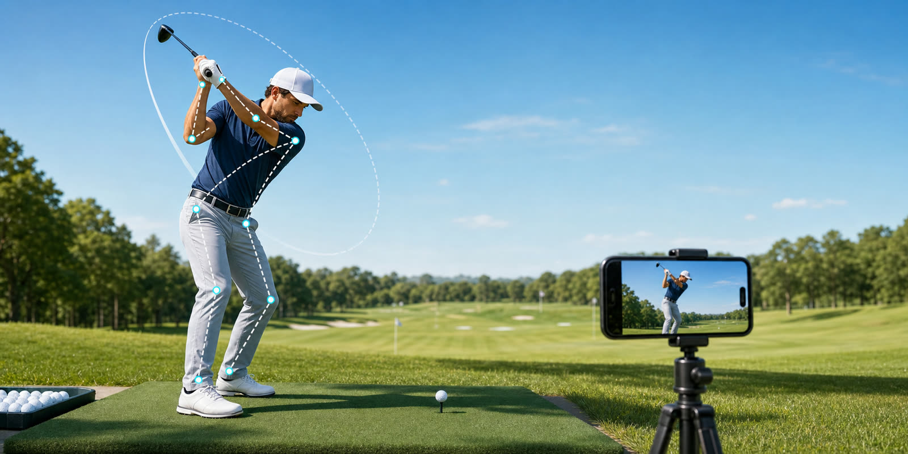
혼자 연습장에 가도, 촬영 때문에 오가지 않습니다
스윙을 찍으려면 녹화 버튼을 누르고 자리로 돌아가고 다시 멈추러 가는 일을 반복해야 합니다. Golf Form Caddie는 카메라가 자세를 실시간으로 인식해 그 번거로움을 없앱니다.
자동 녹화
어드레스를 잡고 잠시 안정되면 녹화가 시작되고, 스윙이 끝나면 설정한 시간 뒤 스스로 멈춥니다.
2대 동시 촬영
정면과 측면에 한 대씩 두면 한 번의 스윙을 두 각도로 동시에 담습니다. 촬영이 끝나면 영상이 한 기기로 모입니다.
비교 분석
두 영상을 나란히 놓고 동기 재생합니다. 0.25배속 프레임 이동과 각도·궤도 그리기를 지원합니다.
화면으로 보기
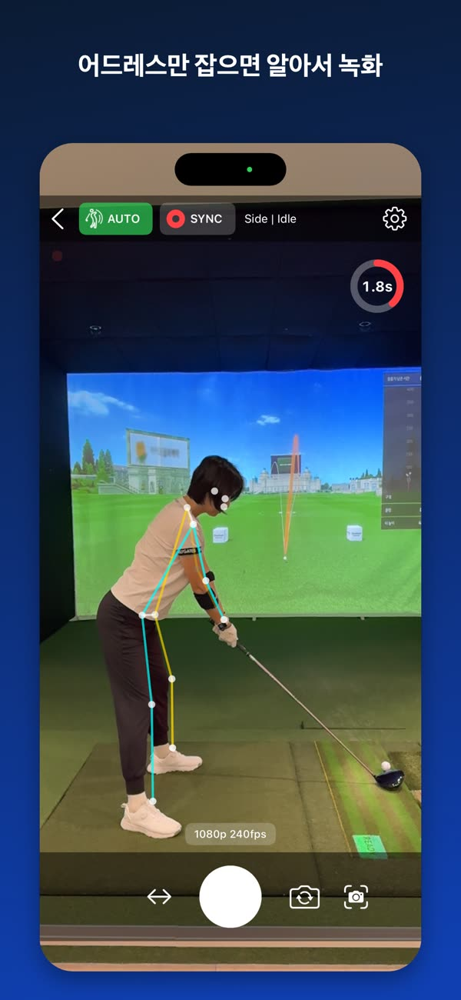
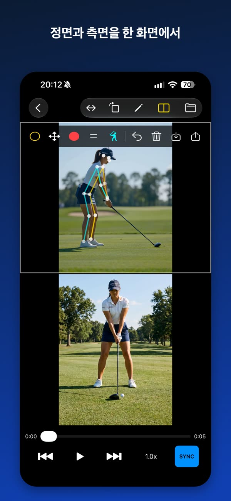
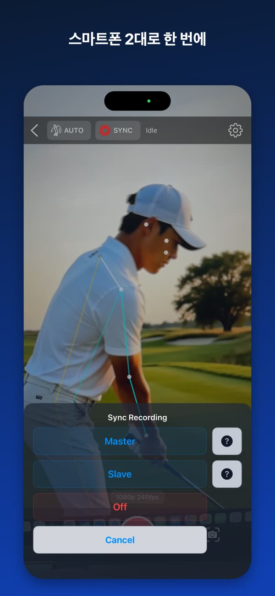
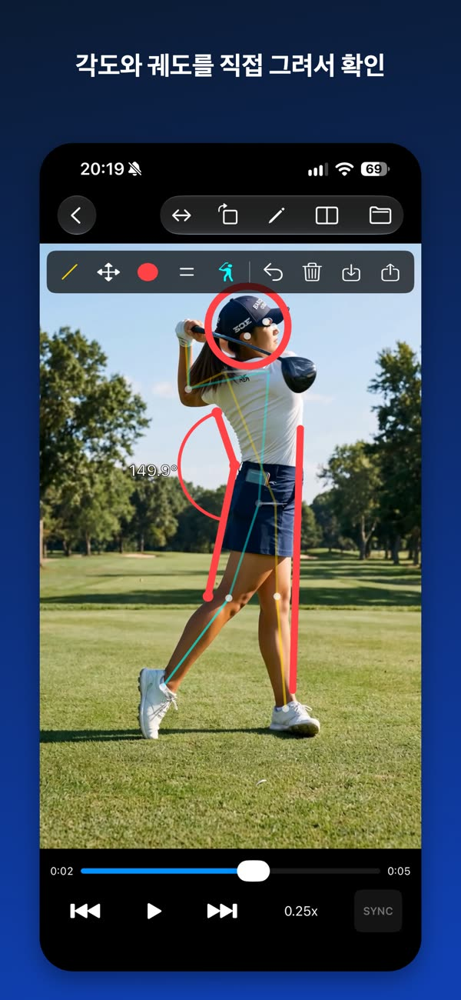
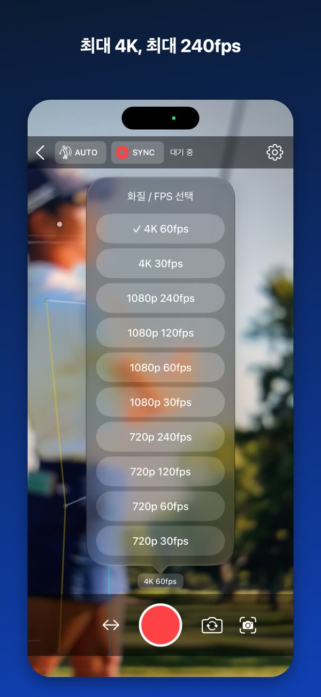
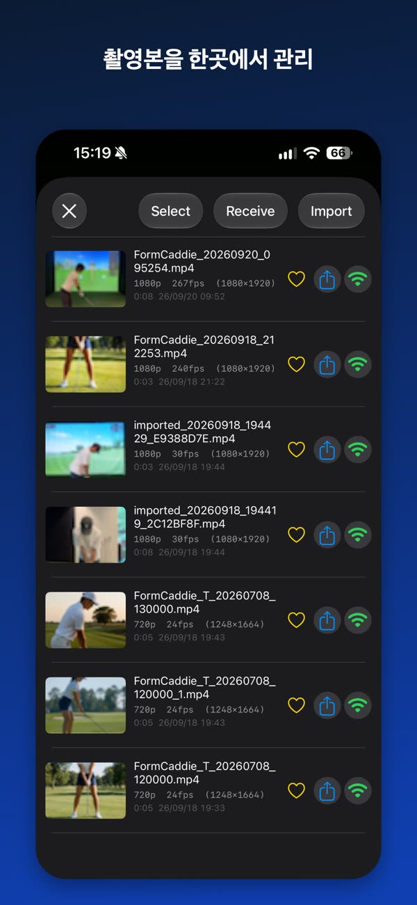
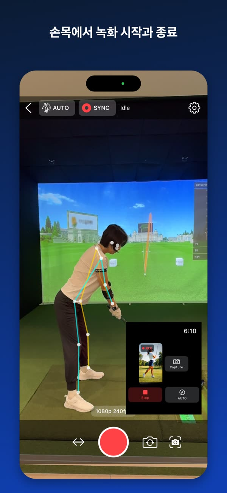
← 좌우로 밀어서 더 보기 →
실시간 포즈 분석
카메라 프레임에서 사람의 주요 관절 위치를 감지하고, 어깨·엉덩이·손목 좌표로 촬영 앵글을 정면·측면·대각으로 추정합니다. 스켈레톤 라인과 어드레스 박스를 화면 위에 겹쳐 인식 상태를 눈으로 확인할 수 있습니다.
모든 분석은 기기 안에서 이루어집니다. 영상이나 분석 결과가 외부로 전송되지 않습니다.
AUTO 녹화
AUTO를 켜면 어드레스 안정화와 자동 종료 대기 진행률이 원형 카운트다운으로 표시됩니다. 스윙 후 종료까지의 대기 시간은 설정에서 조정할 수 있습니다.
2대 동시 촬영 (Sync Recording)
정면과 측면은 서로 다른 것을 보여줍니다. 스윙 궤도는 측면에서, 정렬과 체중 이동은 정면에서 잘 보입니다. 두 대를 놓고 한 번의 스윙을 두 각도로 동시에 담으세요.
- 같은 네트워크의 기기를 Bonjour/mDNS로 찾아 Master / Slave로 연결
- 기기 간 시계 차이를 보정해 녹화 시작·종료 시점을 예약
- 촬영이 끝나면 Slave 영상이 Master로 자동 전송
- 공유 Wi-Fi가 없으면 한 대를 핫스팟으로 쓰는 방법을 앱이 안내
- iPhone과 Android 기기를 섞어서 사용 가능
전문 장비의 genlock처럼 프레임 단위 하드웨어 동기화를 보장하지는 않습니다. 모바일 기기 간 촬영 타이밍을 맞추고 녹화 후 영상을 자동으로 모아주는 구조입니다.
비교 재생과 어노테이션
- 두 영상을 나란히 띄우고 동기 재생 또는 개별 재생
- 0.25배속부터 4배속까지, 0.1초 단위 프레임 이동
- 좌우 반전, 90도 회전, 최대 6배 확대와 이동
- 재생 중에도 포즈 오버레이를 다시 그려 관절 위치 확인
- 원, 선, 사각형, 3점 각도 도구로 화면에 직접 그리기
- 그린 내용은 저장하고 다시 불러오기
Apple Watch
손목에서 iPhone 카메라 상태를 확인하고 녹화를 제어합니다. 최신 화면을 한 장 불러와 자세를 바로 확인할 수 있고, 녹화가 시작되면 햅틱으로 알려줍니다.
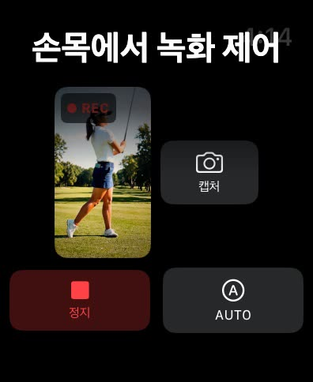
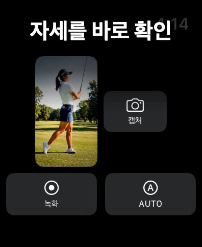
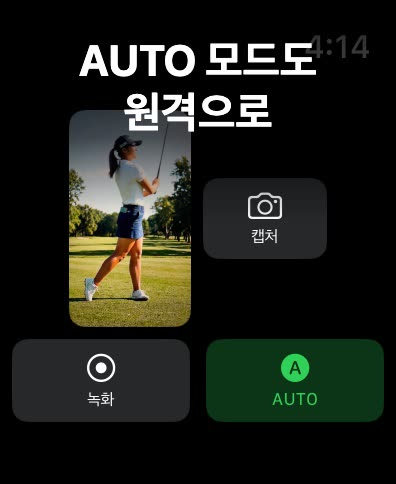
촬영 편의
- 기기가 실제 지원하는 해상도와 프레임만 골라서 표시 (최대 4K, 최대 240fps)
- 전면·후면 전환, 후면 광각·초광각 선택, 미러 프리뷰
- 마지막 설정을 기억해 다음에 그대로 복원
- 블루투스 카메라 리모컨으로 녹화 시작·종료
개인정보
- 회원가입도 로그인도 없습니다
- 영상은 기기 안에만 저장됩니다
- 서버로 아무것도 전송하지 않습니다
- 영상 전송은 내 기기끼리 직접, TLS 암호화와 선택적 PIN 확인
- 광고, 인앱 결제, 외부 분석 도구가 없습니다
사양
| 지원 기기 | iPhone (iOS 15.0 이상) |
|---|---|
| Apple Watch | watchOS 9.0 이상 |
| 해상도 / 프레임 | 최대 4K, 최대 240fps — 기기 모델에 따라 다름 |
| 2대 동시 촬영 | 같은 네트워크에 연결된 기기 2대 필요 |
| 가격 | 무료 · 광고 없음 · 인앱 구매 없음 |
Practice alone without walking back and forth
Filming your own swing usually means tapping record, walking back, hitting the ball, and walking over to stop it again. Golf Form Caddie reads your posture in real time and removes that loop.
Automatic recording
Recording starts once your address settles, and stops on its own a few seconds after the swing finishes.
Two phones, one swing
Place one in front and one at your side to capture the same swing from both angles. The videos gather on one device afterwards.
Compare and analyze
Play two videos side by side in sync. Step through at 0.25x and draw angles and swing lines on the frame.
Screens
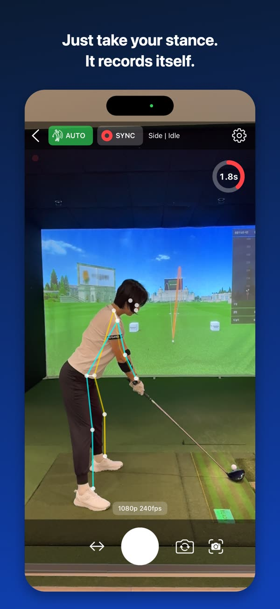
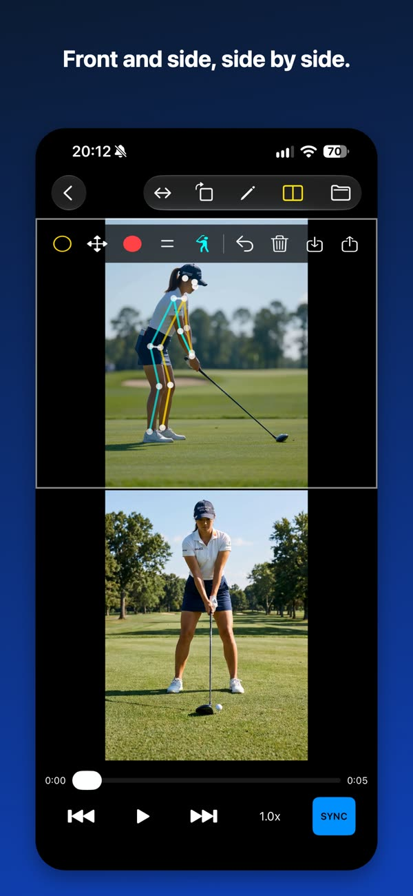
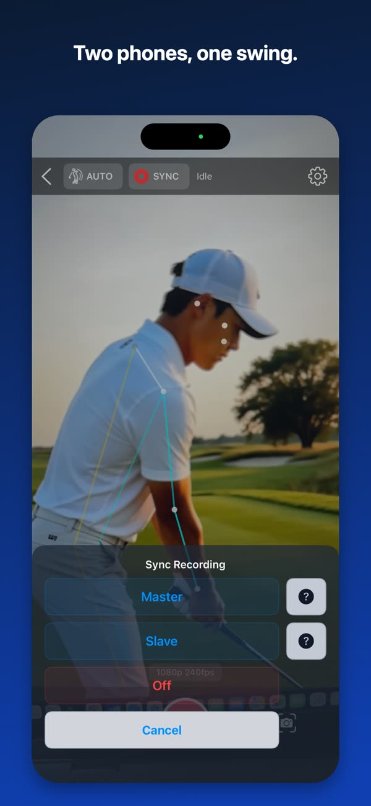
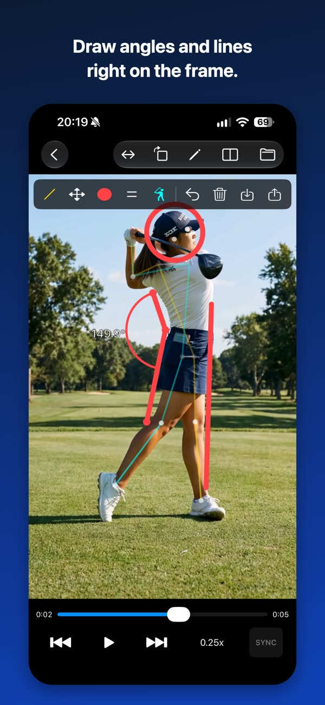
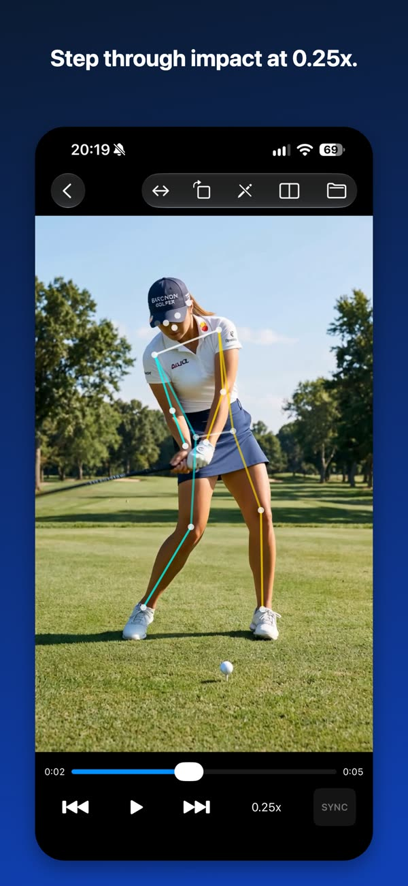
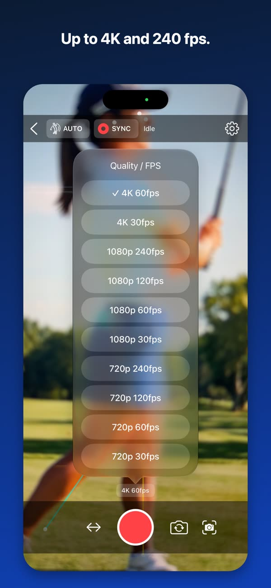
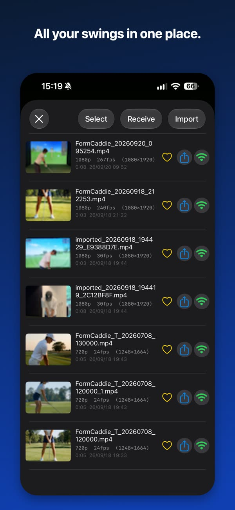
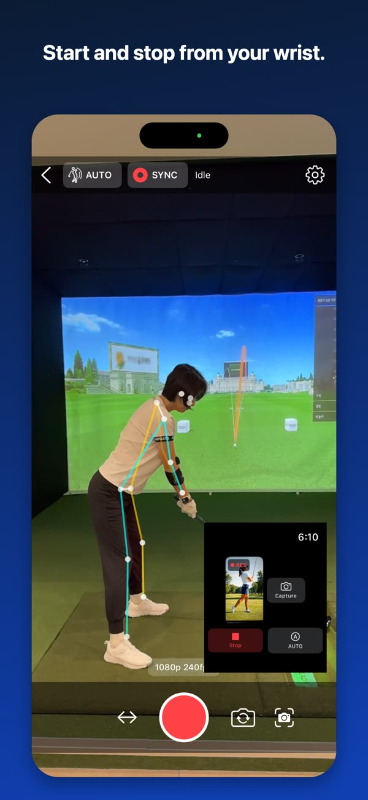
← swipe for more →
Real-time pose analysis
The app detects body joint positions from the camera feed and estimates the shooting angle as front, side, or diagonal using shoulder, hip, and wrist coordinates. A skeleton overlay and address box are drawn on screen so you can see exactly what is being detected.
All analysis happens on the device. No video or analysis result is transmitted anywhere.
AUTO recording
With AUTO on, address stabilization and the auto-stop delay are shown as a circular countdown. The delay before stopping after a swing is adjustable in settings.
Sync Recording
Front and side views show different things. The swing plane reads best from the side, while alignment and weight shift read best from the front. Set up two phones and capture both at once.
- Finds nearby devices over Bonjour/mDNS and pairs them as Master and Slave
- Corrects the clock offset between devices to schedule start and stop
- The Slave video transfers to the Master automatically after recording
- No shared Wi-Fi? The app walks you through using one phone as a hotspot
- Works across iPhone and Android devices
Unlike professional genlock hardware, frame-exact synchronization is not guaranteed. The app aligns recording timing between mobile devices and gathers the footage automatically afterwards.
Playback and annotation
- Open two videos side by side, played in sync or independently
- 0.25x to 4x playback, with 0.1-second frame stepping
- Flip horizontally, rotate 90 degrees, zoom up to 6x and pan
- Pose overlay is redrawn during playback so you can check joint positions
- Draw circles, lines, rectangles, and three-point angles on the frame
- Save your drawings and load them again later
Apple Watch
Check the iPhone camera status and control recording from your wrist. Pull a single still frame to check your setup, and get haptic feedback when recording begins.
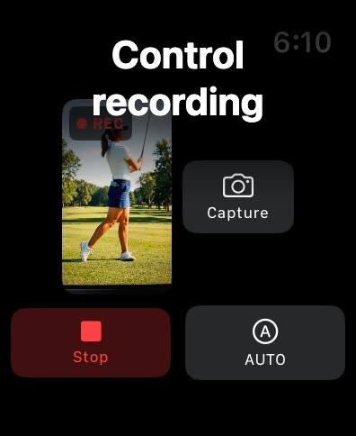
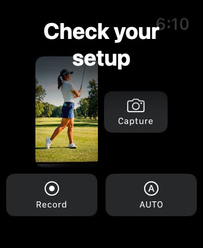
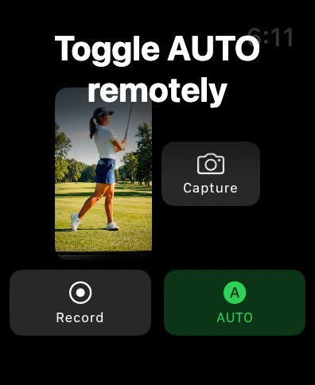
Built for the range
- Lists only the resolutions and frame rates your device supports, up to 4K and 240 fps
- Front and rear cameras, wide and ultra-wide lenses, mirrored preview
- Remembers your last setup and restores it next time
- Start and stop recording with a Bluetooth camera remote
Privacy
- No account, no sign-in
- Videos stay on your device
- Nothing is sent to any server
- Transfers go directly between your own devices over TLS, with an optional PIN
- No ads, no in-app purchases, no third-party analytics
Specifications
| Supported devices | iPhone (iOS 15.0 or later) |
|---|---|
| Apple Watch | watchOS 9.0 or later |
| Resolution / frame rate | Up to 4K, up to 240 fps — varies by device model |
| Two-device recording | Requires two devices on the same network |
| Price | Free · No ads · No in-app purchases |